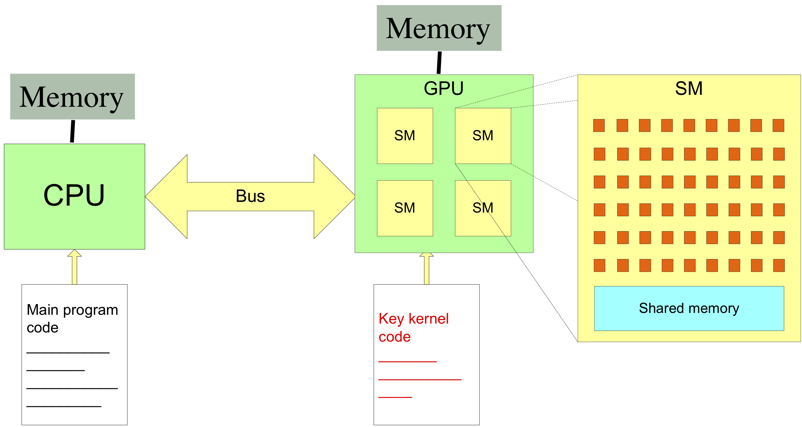

Performance Optimisation
Material by: Alan Gray, Kevin Stratford, Rupert Nash
Architecture of NVIDIA accelerated system
Sources of poor performance
- Potential sources of poor performance include:
- Lack of parallelism
- Copying data to/from device
- Device under-utilisation / memory latency
- Memory bandwidth
- Code branches
- Possible solutions
- Should be relevant on many GPU devices
- "Mileage may vary"
- Some comments on profiling
- Do you have a performance problem?
Exposing parallelism
- Amdahl's Law:
- Parallel performance limited by fraction of code that is serial
- Applies particularly to GPUs
- Performance relies on use of many parallel threads
- Degree of parallelism higher than typical CPU
- Typically want at least $O(10^5) - O(10^6)$ threads in a kernel
- Effort must be made to expose parallelism
- As much as absolutely possible
- Rewriting / refactoring / different algorithm
Copying between host and device
- Separate memory spaces mean some copying inevitable
- Via PCI/Express bus
- Relatively slow/expensive
- Simply must avoid unnecessary copies
- Keep data resident on device
- May involve moving all relevant code to device
- Recalculation / extra computation instead of data communication
Removing data transfer
- Consider a common pattern:
- Must be refactored to:
for (it = 0; it < nTimeSteps; it++) {
myCheapHostOperation(hostData);
cudaMemcpy(..., cudaMemcpyHostToDevice);
myExpensiveKernel <<<...>>> (deviceData, ...);
cudaMemcpy(..., cudaMemcpyDeviceToHost);
}
cudaMemcpy(..., cudaMemcpyHostToDevice);
for (it = 0; it < nTimeSteps; it++) {
myCheapKernel <<< ... >>> (deviceData, ...);
myExpensiveKernel <<< ... >>> (deviceData, ...)
}
cudeMemcpy(..., cudaMemcpyDeviceToHost);
Occupancy and latency hiding
- Work decomposed and distributed between threads
- Suggests may want as many threads as there are cores
- ...or some cores will be left idle
- Actually want $$ N_{threads} >> N_{cores}$$
- Latency for access to main memory
- Perhaps 100 clock cycles
- If other threads are available, can be swapped in quickly
Example
- Suppose we have a two-dimensional loop
for (i = 0; i < 512; i++) {
for (j = 0; j < 512; j++) {
/* ... work ... */
- Parallelise inner loop only
- Can use 512 threads
- Poor occupancy!
- Parallelise both loops
- Can use $512 \times 512 = 262,\!144$ threads
- Much better!
CPU Caching
/* C: recall right-most index runs fastest */
for (i = 0; i < NI; i++) {
for (j = 0; j < NJ; j++) {
output[i][j] = input[i][j];
}
}
! Fortran: recall left-most index runs fastest
do j = 1, NJ
do i = 1, NI
output(i,j) = input(i,j)
end do
end do
- Individual thread has consecutive memory accesses
Memory coalescing
- GPUs have a high peak memory bandwidth
- But only achieved when accesses are coalesced
- That is, when:
- If not, access may be serialised
- Performance disaster
- Need to refactor to allow coalescing
consecutive threads access consecutive memory locations
So, what is the correct order?
- In one dimension, the picture is relatively simple
-
threadsPerBlock = (nThreads, 1, 1) - Consective threads are those with consective index
/* In C: */
idx = blockIdx.x*blockDim.x + threadIdx.x;
output[idx] = input[idx];
! In Fortran:
idx = (blockIdx%x - 1)*blockDim%x + threadIdx%x
output(idx) = input(idx)
- Both good; accesses are coalesced.
Two-dimensional array: C
- Recall: right-most index runs fastest
/* Bad: consecutive threads have strided access */
i = blockIdx.x*blockDim.x + threadIdx.x;
for (j = 0; j < NJ; j++) {
output[i][j] = input[i][j];
}
/* Good: consecutive threads have contiguous access */
j = blockIdx.x*blockDim.x + threadIdx.x;
for (i = 0; i < NI; i++) {
output[i][j] = input[i][j];
}
Two-dimensional array: Fortran
- Recall: left-most index runs fastest
! Bad: consecutive threads have strided access
j = blockIdx.x*blockDim.x + threadIdx.x;
do i = 1, NI
output(i, j) = input(i, j);
end do
! Good: consecutive threads have contiguous access
i = blockIdx.x*blockDim.x + threadIdx.x;
do j = 1, NJ
output(i, j) = input(i, j);
end do
Two-dimensional decomposition
- More complex
-
blocksPerGrid = (nBlocksX, nBlocksY, 1) -
threadsPerBlock = (nThreadsX, nThreadsY, 1) - x counts fastest, then y (and then z, in three dimensions)
/* C: note apparent transposition of i, j here... */
int j = blockIdx.x*blockDim.x + threadIdx.x;
int i = blockIdx.y*blockDim.y + threadIdx.y;
output[i][j] = input[i][j];
! Fortran: looks more natural
i = (blockIdx%x - 1)*blockDim%x + threadIdx%x
j = (blockIdx%y - 1)*blockDim%y + threadIdx%y
output(i, j) = input(i, j)
Grid stride loops
- Common advice is to parallelise a loop by mapping one iteration to one thread
-
- GPUs have limits on the number of threads (1024) and blocks that make up a grid
- There is a small cost to starting/ending a block
- Kernels often need to compute common values which result in redundant computation
- Kernels which use shared memory need to initialise this
- Solution: have each CUDA thread perform several iterations
-
- But how to divide?
- Memory coalescing requires a strided loop.
- Flexible solution is to use the total number of threads in the grid.
Grid stride loops
__global__ void kernel1d(int N, float* data) {
for (int i = blockIdx.x*blockDim.x + threadIdx.x;
i < N;
i += blockDim.x * gridDim.x) {
// loop body
}
int main() {
int devId;
cudaGetDevice(&devId);
int numSM;
cudaDeviceGetAttribute(&numSM,
cudaDevAttrMultiProcessorCount, devId);
kernel1d<<<32*numSM, 128>>>(N, dev_data);
}
Can also run kernel in serial for debugging
Code branching
- Threads are scheduled in groups of 32
- Share same instruction scheduling hardware units
- A group is referred to as a warp
- Warp executes instructions in lock-step (SIMT)
- Branches in the code can cause serialisation
- Warp executes all branches taken by at least one thread
- Threads that aren't in the executing branch sit idle
Avoiding warp divergence
- Imagine want to split threads into two groups:
/* Bad: threads in same warp diverge... */
tid = blockIdx.x*blockDim.x + threadIdx.x;
if (tid % 2 == 0) {
/* Threads 0, 2, 4, ... do one thing ... */
}
else {
/* Threads 1, 3, 5, ... do something else */
}
Avoiding warp divergence
/* Good: threads in same warp follow same path ...
* Note use of the internal variable "warpSize" */
tid = blockIdx.x*blockDim.x + threadIdx.x;
if ( (tid / warpSize) % 2 == 0) {
/* Threads 0, 1, 2, 3, 4, ... do one thing ... */
}
else {
/* Threads 32, 33, 34, 35, ... do something else */
}
Performance Problem?
- Compiler can help to prevent problems
$ nvcc -Xptxas -v ...
- Verbose option for PTX stage
- Parallel Thread Execution assembler (an intermediate form)
- Reports register usage, constant/shared memory usage in kernels
- Reports spills to global memory (very harmful to performance)
- Use iteratively during development
Profiling CUDA code
Two options:- Nsight Systems
-
- https://developer.nvidia.com/nsight-systems
- Analysis of overall application performance on both CPU and GPU
- Unnecessary synchronisation / data movement between host and device
- GUI and CLI interfaces (versions must match exactly to use remotely)
- Nsight Compute
-
- https://developer.nvidia.com/nsight-compute
- Detailed profiling of kernels
- Use "baseline" profile to see result of changes
- Roofline analysis vs. "speed of light"
Using Nsight Systems CLI
- You can use the GUI to run and profile programs locally, if you have a suitable GPU in your workstation.
- For remote systems usually need to:
- run the CLI
- convert and reduce data
- copy to data to your workstation
- and import into the GUI
#SBATCH --qos=gpu # Further batch system directives module load nvidia/nvhpc nsys profile -o reconstruct-${SLURM_JOB_ID} ./reconstruct - LOTS of options to control exactly what data is collected: see documentation https://docs.nvidia.com/nsight-systems/UserGuide/index.html
Using Nsight Systems - GUI
Install from the NVIDIA website, and
open the .qdrep file.
Using Nsight Compute - CLI
- Very similar to Nsight Systems in workflow, but no conversion step
-
#SBATCH --qos=gpu # Further batch system directives module load nvidia/nvhpc ncu -o reconstruct-${SLURM_JOB_ID} reconstruct - Will run with a modest set of metrics, OK for a first look.
- Often better to focus on a single kernel at a time and record more data.
- The GUI has various "sections" for particular analyses which
can be enabled or use preset "section sets", e.g.
ncu -o reconstruct-${SLURM_JOB_ID} \ --kernel-name 'inverseEdgeDetect' \ --launch-skip 1 \ --lauch-count 10 \ --set detailed \ reconstruct
Using Nsight Compute - GUI
Install from the NVIDIA website, and open the
.ncu-rep files you copy from Cirrus.
Profiling a large application
- Reduce profiling to a region
-
- Disable profiling from application start.
#include <cuda_profiler_api.h>- Insert
cudaProfilerStart()before region of interest - Insert
cudaProfilerStop()after region of interest
- Annotate code to make analysis simpler
-
- NVIDIA Tools Extension
#include <nvToolsExt.h>- Name threads, streams, devices, etc
- Mark instantaneous event:
nvtxMark("Custom message"); - Mark ranges:
void ComputeNextTimeStep() { nvtxRangePush("Do timestep"); compute_kernel <<< ... >>>(args); cudaDeviceSynchronize(); nvtxRangePop(); }
Summary
- With care, a good fraction of peak performance is possible
- Can be quite difficult on CPU
- Not all problems well suited
- Often just not enough parallelism